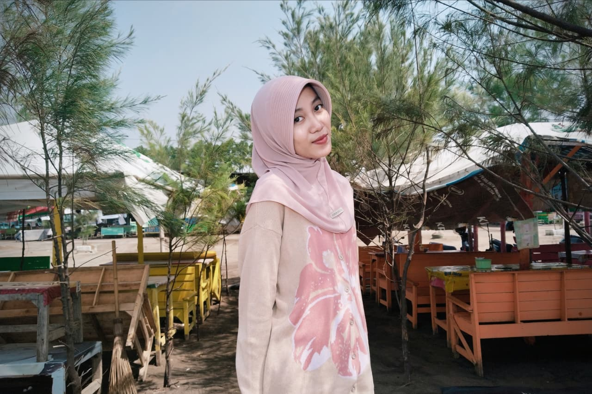

Kualitas
Kualitas dalam setiap sajian.
Cerita Usaha
Kopi Kenangan adalah UMKM fiktif yang menghadirkan cita rasa khas dalam suasana nyaman, dengan pilihan sajian yang cocok untuk menemani setiap momen.

Kualitas dalam setiap sajian.
Rasa yang dekat dengan selera pelanggan.
Pelayanan nyaman untuk setiap kunjungan.

Kopi Kenangan dikelola oleh Dinda Mustika Andini, dengan semangat menghadirkan menu sederhana yang berkesan bagi setiap pelanggan.